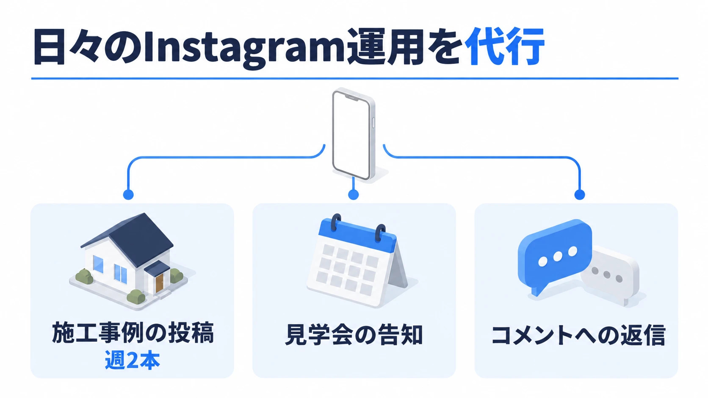
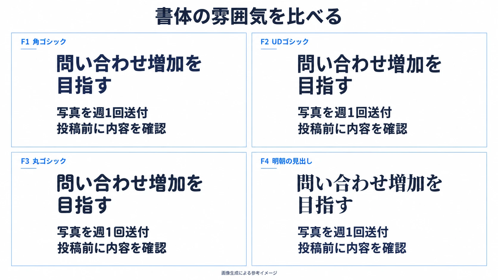
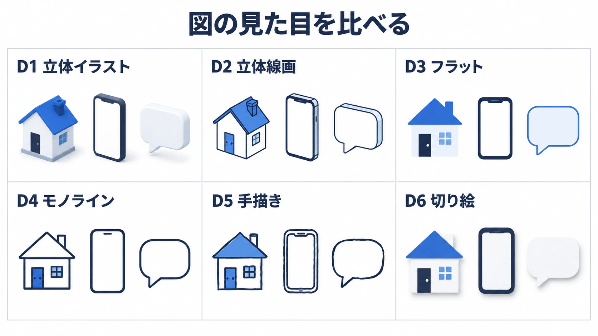

資料は、設計で決まる。
相手に伝わる順番を決め、AIでスライドにする。
4工程を自分の資料で試します。
自分の資料を、設計から作る
目的と説明順を決め、図解入りのスライドにする。設計メモ・構成案・確認した画像スライドを持ち帰ります。
最初から長い設計メモを書く必要はありません。
AIの質問に短く答え、整理されたメモを自分の意図に合わせて直します。
設計は人・生成はAI・検収は人
必須3工程と、任意のデザイン変更
| 言葉 | 何を決めるものか |
|---|---|
| 設計メモ | 誰に、何を、どの順に伝えるか。 |
| 構成案 | 各スライドの表示文章と、説明する図。 |
| 検収 | 出力が意図と素材に合うかの確認・修正。 |
題材と保存先を用意する
自分のテーマを一言で。
題材が未定なら、工務店の架空例から始められます。
どんな資料を作るか
最近作った資料、または次に作る予定の資料を1つ選びます。
手元のメモは整えず、そのまま使えます。
社外へ渡せない情報は、公開できる範囲へ置き換えます。
価格・条件が分からない場合は、推測せず「未確認」で残します。
Codexと作業フォルダー
使うツールはCodexです。
成果物を1つの作業フォルダーへ集め、W1からW4まで同じ会話で進めます。
操作するもの：Codexと、選択した作業フォルダー
作業フォルダー/ 00_素材.md 01_設計メモ.md 02_構成案.md 03_検収メモ.md slides/ slides_design/
画像生成が使えない場合の復帰ルートは、W3とFAQにあります。
未確認の環境設定を推測で変更せず、講師の案内を確認します。
題材がない人は工務店の例を使う
工務店の社長へInstagram運用代行を提案する架空の題材です。
題材文をコピーし、W1のインタビュープロンプトと一緒にCodexへ渡します。
工務店の社長に、Instagram運用代行を提案する資料を作りたいです。 見学会の集客はチラシ中心で、社内にInstagramを担当する人がいません。 まず3か月の試行を提案します。
金額・頻度・条件は、インタビューで分かる範囲を伝えます。
決めていない情報は「未確認」のまま進めて大丈夫です。
4工程で、資料を形にする
毎回、できたものを確かめてから次へ。
デザイン変更は、必須工程が終わった人向けの任意ワークです。
インタビューで設計メモを作る
作業1質問に、1つずつ答える
操作するもの：Codexの同じ会話・自分の題材と素材
プロンプトを渡し、AIからの質問に答えます。
短い回答や箇条書きで大丈夫です。
プロンプト全文を読む
あなたは、資料の設計メモを作るインタビュアーです。 短い対話で本人の考えを引き出し、資料の目的と説明順を設計メモに整理してください。 最初から完成したメモや長い入力シートを求めないでください。 この工程では設計メモを作ります。構成案・画像生成・スキル化へは進みません。 【始め方】 ・題材がまだ分からなければ、最初の返答は次の質問1つだけにする。 「今回は、どんな資料を作りたいですか？ 一言で大丈夫です。」 ・題材、読み手、目的などが会話や素材ですでに分かっていれば、聞き直さず次の不足へ進む。 ・先に質問一覧や長い説明を表示しない。 【インタビューの進め方】 ・1回に尋ねるのは1つの論点。回答を受け取ってから次の質問へ進む。 ・短い回答や箇条書きを受け付ける。整った文章への書き直しを求めない。 ・回答が曖昧な場合は、具体例を尋ねるか、2～3個の候補を示して本人に選んでもらう。 ・毎回の長い解説や称賛を省き、必要な質問に進む。 ・すでに回答や素材で確認できた項目は省く。毎回同じ順序ですべてを尋ねない。 ・相手の本音や潜在ニーズを推測で決めず、本人が知っている状況と、AIの仮説を分ける。 ・素材にない数字・条件・実績・効果は補わない。本人も分からない情報は確認事項にする。 【聞き出す内容】 必要な範囲で、次を確認する。本人へ一括で記入を求めない。 ・どんな資料か。 ・誰に見せるか。その人がすでに知っていること、気にしていること。 ・どんな場面で使うか。画面で説明するか、相手が一人で読むか。 ・見終えた相手に、何を判断・理解・実行してほしいか。 ・使える素材、条件、数字は何か。手元のメモや既存資料は、そのまま受け取る。 ・相手は最初に何を知りたくなるか、その次は何か。 ・今回は入れない情報は何か。 【説明順を一緒に決める】 ・目的と素材が分かったら、相手が持ちそうな疑問を3～5個、短い言葉で提案する。 ・本人がすでに疑問や順番を示していれば、まずその案を使う。 ・提案する順番には、理由を1文添える。 ・本人には「先に答えるべき疑問はありますか？」など、1つの判断を尋ねる。 ・入れない情報が未定なら、候補を提案して本人に選んでもらう。 費用・手間・条件・注意点など、判断に必要な情報を省く候補にはしない。 ・目的、説明順、入れない情報は、本人の回答を得て決める。 ・未解決の事実は確認事項として残し、推測で埋めない。 【設計メモの完成形】 目的と説明順が本人の言葉・選択で決まったら、次の5項目を各1～2文でまとめる。 1. 読み手と使う場面 2. 見終えた相手にどうなってほしいか 3. 相手の疑問と、答える順番 4. 今回は入れない情報 5. 確認が必要なこと 素材の全文、数字の一覧、出典管理、画像の仕様を、設計メモへ詰め込まない。 素材は別に残し、後の構成案では設計メモと元の素材を両方読む。 最後に、意図と違う点がないか1問だけ確認する。 「分からない」と答えられた事実を、未確認と記録する。目的自体が決まらない場合は、目的を決める対話を続ける。 【元の素材】 同じ会話にあるメモ・資料を参照する。素材がまだなければ、インタビュー中に尋ねる。 素材がないからといって、価格・条件・実績・効果を作らない。 【確認後の保存】 本人が設計メモを確認したら、選択済みの作業フォルダーに「01_設計メモ.md」として保存する。 使った素材は「00_素材.md」として別に残す。本人が用意したファイルは上書きしない。 ファイル保存機能が使えない場合は全文を会話に残し、保存できたと報告しない。 最後に、設計メモと元の素材を次の工程で使うと短く伝えて止まる。
作業2整理されたメモを確認する
操作するもの：AIが返した設計メモ
読み手、目的、答える順番、入れない情報、確認が必要な点を読みます。
意図と違う部分だけを直します。
インタビューの質問数は、題材と手元の情報によって変わります。
この設計メモで進めます。作業フォルダーに01_設計メモ.mdとして保存してください。 構成案は次の工程で作ります。
設計メモを構成案にする
作業3設計メモと題材から構成を依頼する
操作するもの：同じ会話の設計メモ・題材の説明
確認済みの設計メモと、最初に伝えた題材から構成を依頼します。
追加する情報があれば、金額・頻度・条件のメモも渡してください。
決めていない条件は「未確認」のままで大丈夫です。
プロンプト全文を読む
あなたは、本人が確認した設計メモをスライド構成案にする編集者です。 同じ会話の設計メモと元の素材、または作業フォルダーの「01_設計メモ.md」「00_素材.md」を両方参照してください。 設計メモを読み取れない場合だけ、該当する本文を尋ねてください。確認済みの目的・順番・除外情報を聞き直さないでください。 この工程では構成案まで作ります。画像生成とスキル化へは進みません。 【枚数】 希望があれば従う。未指定なら、初回のハンズオン用に3〜5枚程度の構成を提案する。 判断に必要な条件が収まらない場合は、情報を落とさず枚数の追加を提案する。 【構成と文章のルール】 ・1スライドで伝えることは1つにする。 ・目的に応じて、最初の1～2枚で資料の主張や求める判断を明確にする。 ・素材にない数字・効果・実績・事例・URLを足さない。 ・未確認事項は未確認と分かる表現にする。資料の根拠として言い切らない。 ・費用・手間・条件・注意点など、相手の判断に必要な情報を省かない。 ・「今回入れない情報」に従う。ただし判断に必要な条件まで除外される場合は確認する。 ・文章は意味を保って短くする。専門用語は読み手の知識に合わせて説明する。 ・画像化の目安は、1枚120字以内、箇条書き3項目まで、主要な文章グループ3つまで。 超える場合は内容を削る前に分割を検討する。文字サイズを小さくする前提で詰め込まない。 ・希望枚数に収まらない場合は、必要な内容と枚数が衝突する箇所を示して確認する。 ・構成案では、表示文章と一緒に、内容を説明する図の計画まで決める。 通常の説明は、図解または小さな立体イラストを入れることを標準とする。 ・図の種類は、教える内容から選ぶ。 比較は同じ軸で並べた比較図、手順は矢印で順序を示すフロー図、 全体の位置は構成図、階層は枝分かれや入れ子、選択は分岐図にする。 概念や利用場面の説明には、内容に合う場面・物の立体イラストを使う。 原稿にない因果関係や推奨経路は作らない。 ・各図について、何を表すか、要素同士がどう関係するか、読む順番、文章との配置を具体的に記す。 「図を入れる」「アイコンを添える」だけで終えない。図中の文字も「表示」に含める。 ・表、チェックリスト、ファイルツリーが十分に説明していれば、場面イラストは追加しない。 ・表紙、短い問い、重要な一文、締めは、学習上の理由があれば文字だけでもよい。 ただし、実際の内容が工程や比較の説明なら図を入れる。文字だけにする理由を記録する。 ・表示文章と、管理用の見出し・設計意図・図解指示を分ける。 話す台本や、検討途中の文章を表示文章へ混ぜない。 【出力形式】 最初に、本人が確認した短い設計メモを示す。 続けて、全スライドを次の表にまとめる。 | 番号 | 1枚で伝えること | 答える疑問 | 図の種類 | 素材の根拠 | その後、各スライドを次の形式で記す。 「表示」のコードブロックには、画像に載せる文章だけを入れる。 ### [スライド 1] 管理用の見出し 役割：［タイトル／説明／比較／手順／問い／締めなど］ 表示： ```text 実際に表示するタイトル、または主となる一文 実際に表示する本文 実際に表示する図のラベル（必要な場合） ``` 図の種類：［比較図／フロー図／構成図／階層図／分岐図／場面・物の立体イラスト／表／文字のみ（理由を記す）など］ 図解指示：［具体的な対象・関係・読む順番・配置。ラベルは「表示」の語句を使う。文字だけなら理由］ 強調する語句：［表示文章から1～3箇所。必要なければ「なし」］ 【自己点検】 ・目的と、読み手の疑問の順番に沿っているか。 ・表示文章が全枚分あり、1枚で伝えることが1つになっているか。 ・必要な条件や注意点を落としていないか。 ・素材にない情報や、未確認事項の断定が混じっていないか。 ・説明内容に合う図を計画しているか。対象・関係・配置が具体的か。 ・図のラベルも表示文章に含まれ、制作メモと分かれているか。 最後に、本人に確認してほしい点と、解消していない不足だけを短く示す。 【確認後の保存】 本人が構成案を確認したら、作業フォルダーに「02_構成案.md」として保存する。 既存の版を置き換える場合は別の版として残す。 画像化は次の生成プロンプトで進める。
作業4文章と図の計画を確認する
操作するもの：AIが返した構成案
相手の疑問に答える順番か、必要な条件が残っているかを確かめます。
画像に載るのは「表示」のコードブロック内の文章です。
「図を入れる」だけでは、何を説明する図か決まりません。
この構成案で進めます。作業フォルダーに02_構成案.mdとして保存してください。 画像に載せるのは「表示」の文章だけです。
画像を生成し、内容を確かめる
作業5基本デザインで生成する
操作するもの：02_構成案.md・Codexの画像生成
最初は白地・ネイビー×ブルーの基本デザインを使います。
説明には図解または小さな立体イラストを入れます。
プロンプト全文を読む
あなたは、確定した構成案を画像スライドにする制作者です。 以下の構成案を使い、内蔵の画像生成機能でスライドを作成してください。 今回は画像生成と検収まで進めます。スキル化は、後の工程で実施します。 【確定した構成案】 同じ会話で確認済みの構成案、または作業フォルダーの「02_構成案.md」。読み取れない場合だけ本文を尋ねる。 【生成範囲】 確認済みの構成案の全枚。枚数が多い場合、まず1枚を試してから残りへ進む。 【保存先】 選択済みの作業フォルダー内の「slides/」。生成後に利用可能な保存手段でここへコピーする。 【配色の変更】 未指定なら次のネイビー×ブルーを使用。今回はまず基本デザインで生成する。 【表示内容の扱い】 ・入力された構成案は本人が確定したものとして扱い、同じ確認を繰り返さない。 ・「表示」のコードブロック内だけを、画像に載せる文章として扱う。 最初の行は通常、タイトルまたは主となる一文。別のタイトルを足さない。 ・コードブロック外の管理用見出し、番号、役割、図の種類、図解指示、強調指定は文字として描かない。 図の種類・図解指示・強調指定は、制作に反映する。図のラベルは「表示」の語句だけを使う。 ・確定した順番・枚数・表示文章・条件・注意点を保つ。 勝手に言い換え、要約、追記、削除をしない。 ・収まらない場合は、図を小さく・単純にし、配置を変える。 それでも読めない場合は、分割案を示して本人の確認を待つ。文章を削らない。 ・表示範囲や図解の意味が判断できない場合は、該当箇所だけ確認する。 【初期デザイン】 ・16:9。1920×1080を基準に設計する。1回の画像生成につき1枚を作る。 ・白背景 #FFFFFF、濃いネイビー #1F2A44 の文字、広い余白、整列した配置。 ・アクセントはブルー #2F6FDE。判断ポイント、重要な語句、矢印、構造を示す線に使う。 ・タイトルの下に、細く控えめなブルーの線。グラデーションは使わない。 ・薄いパネルは #EEF4FF。広い面を濃い色で塗らない。 ・Noto Sans JP Bold相当の日本語ゴシック体を全枚で統一する。 ・文字は3段階。タイトル80px、本文・具体例・説明・まとめ56px、短い図解ラベル44px。 別解像度では3段階を同じ倍率で調整する。本文をラベルサイズへ下げない。 ・強調する語句は文字色だけを変える。「人」「AI」など、一部分だけを大きくしない。 同じ本文内の語句はすべて同じサイズに保つ。余白を埋めるために文字を拡大しない。 ・外側の余白は80px以上、文章グループ間は32px以上、行間は1.25～1.35を目安にする。 ・文字サイズは画像生成への目標指定として扱い、結果を見て統一感と可読性を確認する。 ・全面の暗い背景、派手な装飾、強い影、発光、絵文字、ロゴ、透かしを使わない。 ・表紙や章の区切りも同じデザインにする。 ・配色の変更が指定されている場合は、色だけを置き換え、読みやすさとデッキ内の統一を保つ。 【図解とイラスト】 ・説明スライドは、図解または小さな立体イラストを入れることを標準とする。 図の種類は構成案に従い、初稿から実際に描く。文章だけのパネルで置き換えない。 ・比較は同じ軸で並べた比較図、工程は矢印で順序を示すフロー図、 全体の位置は構成図、階層は枝分かれや入れ子、選択は分岐図で示す。 色付きの文章カードや装飾アイコンだけで、関係図の代わりにしない。 ・通常の説明には、内容に結びつく小さな場面・物・関係図を入れる。 表、チェックリスト、ファイルツリーが十分に説明していれば、場面イラストは追加しない。 ・表紙、短い問い、重要な一文、締めで文字だけにする場合は、構成案の理由が内容に合うか確認する。 実際の内容が工程や比較の説明なら、その関係図を入れる。 必須の図解がない画像を、後から文字だけの例外として受け入れない。 ・場面や物は、斜め上から見たすっきりしたベクター風の立体図にする。 白・薄いグレーを基調に、アクセント色、2～3段階の平面的な色面、短く薄い影を使う。 ・視点、輪郭の描き方、細かさをそろえる。人物は行動の説明に必要な場合だけ入れる。 自然な大人の体型と、分かりやすい動作にする。人物などに関する本人の制約を優先する。 ・文章と必要な関係図の領域を先に確保し、イラストの領域・最大サイズを決める。 イラストで本文を圧迫しない。内容が少なくても、絵を大きくして余白を埋めない。 ・文字とラベルは水平・正面向き。立体表現で文字や接続線を隠さない。 ・スクリーンショット、UI、顔写真、URL、QRコードを創作しない。 指定された空白領域は空ける。提供済みの実物素材は指示された範囲で使う。 ・スライド番号は画像に描かない。 【生成と検収の手順】 1. 全対象について、次の図解計画を整理する。 番号／図の種類／対象と関係／文章と図の配置／文字だけの場合の理由。 表示文章と強調箇所も確認し、必要な図解がプロンプトから抜けていないか点検する。 2. 1枚ずつ生成する。画像生成への指示には、その1枚のデザイン・表示文章・図解・配置だけを渡す。 表示文章と制作指示を明確に分け、文字サイズの3段階を毎回指定する。 必須の図解を「任意」「必要なら」と弱めない。 3. 生成した画像を1枚ずつ開き、確定した構成案と照合する。 文字・数字・条件の欠落や意味の変化、余計な文章、図解の欠落、はみ出しを確認する。 図解が計画どおりの対象と関係を示しているかも確認する。 必須の図解がなければ、文字と色が正しくても不合格として直す。 同じ表示幅で全枚を比べ、約960×540でも本文とラベルを読めるか確認する。 プロンプトに書いた内容が画像にもあるとは決めつけない。 4. 不具合の原因を具体的に直し、該当スライドを再生成して再確認する。 同じ指示のまま再試行し続けない。 5. 利用可能な保存操作で、slide_01.png のように番号順に保存する。 実際のファイルの存在、形式、寸法、16:9の比率、欠番を確認する。 利用可能な画像生成・保存手段がない場合は、その制約を報告する。 依頼なくHTML、PPTX、外部APIによる生成へ切り替えない。 最後に、生成枚数、保存先、修正した箇所、残っている問題を短く報告する。 検収で直っていない問題がある画像を、完成扱いにしない。 【修正から学ぶ記録】 既存の画像は上書きせず、修正版を別名で残す。保存前に対象ファイルの有無を確認する。 実際に直した箇所を「03_検収メモ.md」に短く残す。 意図しない増加グラフやSNS画面が出た場合、文章だけでなく図の意味も構成案と照合し、該当画像を内蔵画像生成で直す。
作業6文字だけでなく、図の意味も見る
操作するもの：生成画像と構成案
- 表示文章・数字・税別・回数に、欠落や追加がないか。
- 「想定」「未確認」「要確認」が残っているか。
- 図の対象・順序・分岐・比較軸が構成案と同じか。
- 本文と条件が読めるか。文字が欠けたり重なったりしていないか。
根拠のない成果を示す図を除き、期間だけの図へ直しました。
作業7問題を1つ、具体的に直す
操作するもの：修正する画像・slides/・検収メモ
スライド［番号］の［直したい箇所］を、構成案の［正しい文章・図の意味］に合わせて直してください。 金額・条件・注意点と、指定していない部分は保ってください。 元の画像を残し、修正版を別名で保存して見せてください。
「もっと良く」ではなく、何をどう直すかを伝えます。
修正前の画像を残し、直した理由を検収メモへ記録します。
完成例を使ったことと、自分の資料を生成できたことは分けて振り返ります。
デザインを変えてみる
作業8見本を1つ選ぶ
操作するもの：デザイン見本カタログ
まず組合せ6例から選びます。
フォントだけ、図だけ、配色だけを変えても構いません。
作業9まず1枚だけ変更する
操作するもの：対象の画像1枚・変更用プロンプト
コピーした指示へ、変更したい画像のファイル名または番号を入れます。
元と並べて、文章・条件・図の関係が保たれているかを確かめます。
プロンプト全文を読む
あなたは、確認済みのスライドのデザインを変更する制作者です。 内蔵の画像生成・画像編集機能を使ってください。 【対象】 ［変えたい画像のファイル名、またはスライド番号を1つ指定］ 指定された画像を先に開き、構成案「02_構成案.md」の同じスライドと照合する。 【変更するもの】 ［フォント／図の見た目／配色／組合せセットのいずれか］ ［見本の名前、または変更したい雰囲気を一言で記入］ 未指定の要素は元のデザインを保つ。 【選べる見本】 フォント： F1 角ゴシック：Noto Sans JP Bold相当。 F2 UDゴシック：BIZ UDGothic Bold相当。 F3 丸ゴシック：Zen Maru Gothic Bold相当。 F4 明朝の見出し：見出しはNoto Serif JP Bold相当、本文はNoto Sans JP Bold相当。 図の見た目： D1 立体イラスト：斜め上からのベクター風。平面の色面と薄い影。 D2 立体線画：D1と同じ視点。濃紺の輪郭、白い面、青の小さな差し色。 D3 フラット：正面からの2D。単純な面、濃紺と青、影なし。 D4 モノライン：均一な太さの線。濃紺の線、白い面、青の接続線。 D5 手描き：少し揺れる線、少ない色、白地。文字は手書きにしない。 D6 切り絵：重ねた紙の形。浅い影、少ない色、単純な輪郭。 配色（背景は全て白）： C1 ネイビー×ブルー：文字#1F2A44、強調#2F6FDE、薄い面#EEF4FF。 C2 チャコール×ティール：文字#263238、強調#007F86、薄い面#EAF6F5。 C3 ダークブラウン×テラコッタ：文字#3B302A、強調#B54B32、薄い面#FAEEE8。 C4 ダークグリーン×オーカー：文字#243C32、強調#8A5B00、薄い面#F7F0E3。 組合せセット： S1 標準の提案資料＝F1＋D1＋C1。 S2 線画の講義資料＝F1＋D2＋C1。 S3 読みやすい業務説明＝F2＋D3＋C2。 S4 やわらかい案内＝F3＋D5＋C3。 S5 落ち着いた紹介＝F4＋D4＋C4。 S6 紙の質感の説明＝F1＋D6＋C2。 【保つもの】 ・構成案の順番・枚数・全ての表示文章・図のラベル。 ・金額、税別、回数、契約条件、注意点、未確認事項。 ・図が説明する対象と関係。フローの順序、分岐、比較軸を変えない。 ・文字サイズの3段階、余白、読みやすさ。 ・指定していないデザイン要素。 変更対象に明示したデザイン指定は、元のデザイン指定より優先する。 例：D3フラットを選んだら、その画像では元の立体指定を置き換える。 フォント名は書体の雰囲気の参考。画像生成で厳密なフォントファイルの使用やpx値の一致を保証しない。 【進め方】 1. 指定画像を見て、どの要素を変更するか1〜2文で説明する。確認済みの選択を聞き直さない。 2. その1枚だけを編集し、作業フォルダーの「slides_design/」へ別名で保存する。 例：slide_03_design_v1.png。元画像は残す。 3. 構成案と照合し、文字・条件・図の関係が保たれているか、本文が読めるかを確認する。 4. 元画像と並べて見せ、実際に変更した箇所と、直せていない問題を短く示す。 5. 全枚への適用は、本人が試作を見て依頼した場合だけ進める。同じ指定で全枚をそろえる。 既存の画像を読み取れない場合は、その画像の添付を依頼する。 画像編集機能が使えない場合は状況を説明し、無断でHTML・PPTX・外部APIへ切り替えない。
作業10確認できたら全枚へ広げる
操作するもの：変更した1枚・残りの画像
この変更版のデザインを、残りのスライドにも適用してください。 構成案の順番・枚数・表示文章・金額・条件・注意点・図の関係は保ってください。 元の画像を残し、slides_design/に別名で保存してください。
デザイン変更は任意です。
時間が足りなければ、基本デザインで必須工程を終え、講義のあとに試します。
完成例で振り返り、自分の資料へ
完成例と見比べ、同じ作り方を別の資料にも使います。
デザインを選ぶときも、内容と読みやすさを確認します。
工務店の完成例で振り返る
設計メモから構成案、画像スライドへ進んだ講師の試行例です。
自分の成果物と見比べ、目的・説明順・図の関係を確かめます。
完成例は、講師が架空の金額・頻度・条件を用意して作成しました。
実際の相場や効果を示すものではありません。作成する資料の内容は、自分の回答に合わせて決めます。
完成例のインタビューで答えたこと
最初に知りたい：どんな成果が得られるか。
目指す成果：Instagram経由の問い合わせ増加。
次に知りたい：いくらかかるか。
完成例は、用意した条件のメモに3つの回答を加えて整理しました。
題材文だけで始める場合の質問数は、対話の内容によって変わります。

デザイン見本カタログ
同じ文章と3業務の関係を保ち、見た目だけを変えた6例です。
見本を選んで、変更指示をコピーできます。
S1 標準の提案資料
プロンプト全文を読む
あなたは、確認済みのスライドのデザインを変更する制作者です。 内蔵の画像生成・画像編集機能を使ってください。 【対象】 ［変えたい画像のファイル名、またはスライド番号を1つ指定］ 指定された画像を先に開き、構成案「02_構成案.md」の同じスライドと照合する。 【変更するもの】 ［フォント／図の見た目／配色／組合せセットのいずれか］ ［見本の名前、または変更したい雰囲気を一言で記入］ 未指定の要素は元のデザインを保つ。 【選べる見本】 フォント： F1 角ゴシック：Noto Sans JP Bold相当。 F2 UDゴシック：BIZ UDGothic Bold相当。 F3 丸ゴシック：Zen Maru Gothic Bold相当。 F4 明朝の見出し：見出しはNoto Serif JP Bold相当、本文はNoto Sans JP Bold相当。 図の見た目： D1 立体イラスト：斜め上からのベクター風。平面の色面と薄い影。 D2 立体線画：D1と同じ視点。濃紺の輪郭、白い面、青の小さな差し色。 D3 フラット：正面からの2D。単純な面、濃紺と青、影なし。 D4 モノライン：均一な太さの線。濃紺の線、白い面、青の接続線。 D5 手描き：少し揺れる線、少ない色、白地。文字は手書きにしない。 D6 切り絵：重ねた紙の形。浅い影、少ない色、単純な輪郭。 配色（背景は全て白）： C1 ネイビー×ブルー：文字#1F2A44、強調#2F6FDE、薄い面#EEF4FF。 C2 チャコール×ティール：文字#263238、強調#007F86、薄い面#EAF6F5。 C3 ダークブラウン×テラコッタ：文字#3B302A、強調#B54B32、薄い面#FAEEE8。 C4 ダークグリーン×オーカー：文字#243C32、強調#8A5B00、薄い面#F7F0E3。 組合せセット： S1 標準の提案資料＝F1＋D1＋C1。 S2 線画の講義資料＝F1＋D2＋C1。 S3 読みやすい業務説明＝F2＋D3＋C2。 S4 やわらかい案内＝F3＋D5＋C3。 S5 落ち着いた紹介＝F4＋D4＋C4。 S6 紙の質感の説明＝F1＋D6＋C2。 【保つもの】 ・構成案の順番・枚数・全ての表示文章・図のラベル。 ・金額、税別、回数、契約条件、注意点、未確認事項。 ・図が説明する対象と関係。フローの順序、分岐、比較軸を変えない。 ・文字サイズの3段階、余白、読みやすさ。 ・指定していないデザイン要素。 変更対象に明示したデザイン指定は、元のデザイン指定より優先する。 例：D3フラットを選んだら、その画像では元の立体指定を置き換える。 フォント名は書体の雰囲気の参考。画像生成で厳密なフォントファイルの使用やpx値の一致を保証しない。 【進め方】 1. 指定画像を見て、どの要素を変更するか1〜2文で説明する。確認済みの選択を聞き直さない。 2. その1枚だけを編集し、作業フォルダーの「slides_design/」へ別名で保存する。 例：slide_03_design_v1.png。元画像は残す。 3. 構成案と照合し、文字・条件・図の関係が保たれているか、本文が読めるかを確認する。 4. 元画像と並べて見せ、実際に変更した箇所と、直せていない問題を短く示す。 5. 全枚への適用は、本人が試作を見て依頼した場合だけ進める。同じ指定で全枚をそろえる。 既存の画像を読み取れない場合は、その画像の添付を依頼する。 画像編集機能が使えない場合は状況を説明し、無断でHTML・PPTX・外部APIへ切り替えない。
フォント4系統
画像生成による書体の参考イメージです。
指定フォントのファイルで組版した見本ではありません。

| 見本 | 変更用プロンプトへ入れる指定 |
|---|---|
| F1 角ゴシック | Noto Sans JP Bold相当の角ゴシックへ。サイズと配色は保持。 |
| F2 UDゴシック | BIZ UDGothic Bold相当のUDゴシックへ。字の内側の空間を十分に。 |
| F3 丸ゴシック | Zen Maru Gothic Bold相当の丸ゴシックへ。端と角に丸み。 |
| F4 明朝の見出し | 見出しだけNoto Serif JP Bold相当の明朝へ。本文は角ゴシックのまま。 |
正式な字形：Noto・BIZ UDGothic・Zen Maru Gothic。
F1とF2の差は参考画像では小さいため、公式見本も参照します。
図の見た目6種類

| 見本 | 変更用プロンプトへ入れる指定 |
|---|---|
| D1 立体イラスト | 斜め上の視点、平面の色面、薄い影。 |
| D2 立体線画 | 立体の視点、白い面、濃紺の輪郭線、小さい差し色。 |
| D3 フラット | 正面2D、単純な面、少ない色、影なし。 |
| D4 モノライン | 正面2D、均一な太さの線、白い面。 |
| D5 手描き | 少し揺れる端正な線。文字はゴシックのまま。 |
| D6 切り絵 | 紙の単純な形を重ねる。浅い影、少ない色。 |
立体・線画・フラット・手描きは「どう描くか」。
見た目を変えても、矢印の順序や比較軸は保ちます。
白地の配色4組
強調 #2F6FDE
薄い面 #EEF4FF
強調 #007F86
薄い面 #EAF6F5
強調 #B54B32
薄い面 #FAEEE8
強調 #8A5B00
薄い面 #F7F0E3
背景は全て白。
薄い補助色を本文の文字色には使いません。
スライド［番号］の配色だけをC2へ変更してください。 文字#263238、強調と線#007F86、薄い面#EAF6F5、背景は白。 文章・条件・図の関係・フォント・文字サイズは保ってください。
別の資料でも、目的から始める
| 次に作る資料 | 先に考えること |
|---|---|
| 社内提案 | 上司に何を判断してほしいか。費用と手間をどこで答えるか。 |
| サービス説明 | 相手がすでに知っていることと、導入前に知りたいこと。 |
| 講義資料 | 見終えた人に何を理解し、何ができてほしいか。 |
見本の目的や順番を、そのまま自分の題材へ移しません。
W1のインタビューで、読み手と目的を決め直します。
試して直したプロンプトを、後でスキルへ
まずプロンプトで一周し、どこを人が決め、何を直したかを残します。
次回にも繰り返す質問と制作ルールを、後からスキルにまとめます。
保存する内容と方法は、試行後に整理します。
止まった場所から、再開する
質問が多いときも、画像生成で止まったときも。
戻る工程を確認して続けます。
操作とつまずき
Q題材が決まっていません。
まず共通例で流れを試し、自分の題材は講義のあとに考えても構いません。
Q質問が多くて進みません。
分からない事実は「未確認」と伝え、目的と順番の対話を続けます。
Q構成案で止まりました。
本人の資料が完成したこととは分けて振り返ります。
Q画像生成が使えません。
「講義のあと」の完成画像で照合を続ける復帰ルートがあります。
Q保存したファイルが見つかりません。
保存できていない場合は、保存が済んだものとして扱いません。
Q講義を聞き逃しました。
質問方法は当日の講師の案内を確認します。
内容とデザイン
QAIが数字や成果を足しました。
図に足された増加グラフなども照合の対象です。
Q図は入っていますが、意味が違います。
装飾アイコンがあるだけでは、関係を説明する図の代わりになりません。
Q指定したフォントと違って見えます。
字形の特徴も文章で指定し、生成した文字の読みやすさを確かめます。
Qデザイン変更で文章が変わりました。
デザイン変更でも、数字・条件・注意点は保ちます。
Qデザインを全部変える時間がありません。
任意ワークは、まず1枚の試作から始めます。